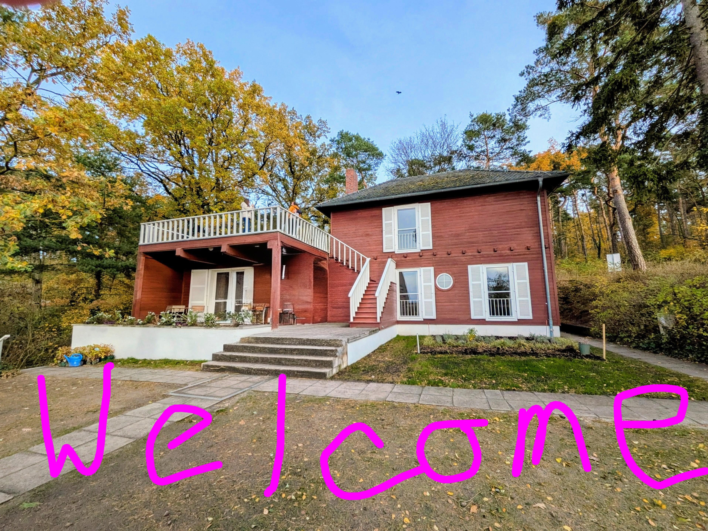

WALK in the footsteps of a genius and get inspired by Einstein. The summerhouse leaves a lasting
impression on countless visitors.Many visitors describe their time at the summerhouse as a truly moving
and inspiring experience.
GET INSPIRED BY EINSTEIN
The summerhouse

Step into the peaceful retreat where Albert Einstein spent his summers thinking big thoughts, sailing small boats, and
proving that bad hair is timeless. Here, relativity meets relaxation — the lake sparkles, ideas float, and time feels
deliciously bendy.
You can sit where genius once sat, stare at the same sky that inspired E = mc², and maybe even come up with your own
theory (like why your phone battery dies faster near beautiful scenery)..
The Summerhouse Highlights
Stay at the historic Big Sur River Inn
Privately guided tours around the house on request
Hike through any of the 5 surrounding national parks
Picnic lunches prepared by the River Inn kitchen
Complimentary country breakfast.
Optional 4th day includes:
Admission to the Henry Miller Library
Tour the Point Reyes Lighthouse
Hikes available for all skill levels
Einstein's garden
Tucked behind the famous summerhouse lies Einstein’s Garden — a quiet patch of green where the world’s most famous
thinker found calm among cabbages, cosmos, and cosmic thoughts.
Einstein believed that nature was the best
teacher — and that a walk among plants could solve almost any problem (except maybe quantum mechanics).
The garden isn’t huge, but its roots run deep: this is where simplicity met genius, where time slowed down, and where
relativity took a breather.
The garden Highlights
So take a stroll, breathe in the inspiration, and remember: even a mind like Einstein’s needed a little sunlight and
soil to flourish.
Take your time in the garden and get inspired.
Watch the sunset from the balcony overlooking the garden and the hill where the house is situated.
Einstein’s Garden — proof that great ideas can bloom anywhere.
The Death Valley Survivor's Trek
Hot stuff? Need more of a challenge? Take this tour to the hottest place in
North America: Death Valley. Due to extreme temperatures (120 degrees and higher) in the summer
months, this tour is only offered November through April. Are you up to the challenge?
Death Valley Highlights
Hike one of the many scenic trails in Death Valley
Cool off in Darwin Falls and experience the contrast between lush vegetation and the
surrounding desert
Enjoy spectacular stargazing in this minimal light pollution environment
Visit Furnace Creek Visitor Center to learn about the park's geology, wildlife, and history
Take a guided tour of Scotty's Castle, an impressive Spanish-style mansion nestled amidst
the desert
In the Steps of John Muir
Follow in the steps on John Muir, famous naturalist and founder of the Sierra
Club, and walk the same trails he helped blaze in and around Yosemite National Park.
Yosemite Highlights
Follow in John Muir's footsteps by embarking on hikes and nature walks through pristine
wilderness areas that he explored.
Engage in informative talks and presentations led by naturalists and experts who can share
insights about John Muir's life, his conservation philosophy, and his impact on the natural
world.
Explore the national parks and conservation areas that were significant to John Muir's life
and work.
Take moments for quiet reflection and contemplation, allowing yourself to connect with
nature on a deeper level.
 Tucked behind the famous summerhouse lies Einstein’s Garden — a quiet patch of green where the world’s most famous
thinker found calm among cabbages, cosmos, and cosmic thoughts.
Einstein believed that nature was the best
teacher — and that a walk among plants could solve almost any problem (except maybe quantum mechanics).
The garden isn’t huge, but its roots run deep: this is where simplicity met genius, where time slowed down, and where
relativity took a breather.
Tucked behind the famous summerhouse lies Einstein’s Garden — a quiet patch of green where the world’s most famous
thinker found calm among cabbages, cosmos, and cosmic thoughts.
Einstein believed that nature was the best
teacher — and that a walk among plants could solve almost any problem (except maybe quantum mechanics).
The garden isn’t huge, but its roots run deep: this is where simplicity met genius, where time slowed down, and where
relativity took a breather.
 Hot stuff? Need more of a challenge? Take this tour to the hottest place in
North America: Death Valley. Due to extreme temperatures (120 degrees and higher) in the summer
months, this tour is only offered November through April. Are you up to the challenge?
Hot stuff? Need more of a challenge? Take this tour to the hottest place in
North America: Death Valley. Due to extreme temperatures (120 degrees and higher) in the summer
months, this tour is only offered November through April. Are you up to the challenge? Follow in the steps on John Muir, famous naturalist and founder of the Sierra
Club, and walk the same trails he helped blaze in and around Yosemite National Park.
Follow in the steps on John Muir, famous naturalist and founder of the Sierra
Club, and walk the same trails he helped blaze in and around Yosemite National Park.